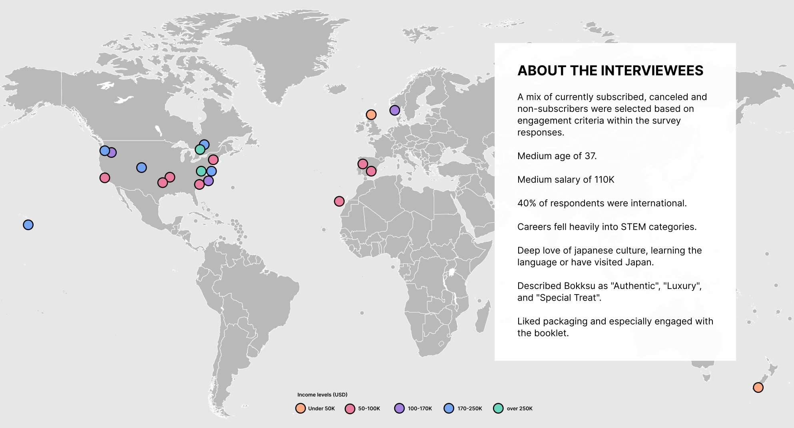

Bokksu
- Diagnosis
- Data tools
- Subscriptions
Business Goals
Customer retention/Decrease churn. Increase LTV. Reach valuation of 100 million by EOY.
Challenges
Differentiating themselves in a crowded market. Transitioning customers from subscriber to other offerings.
Solutions
Create personas to get the company speaking the same language and focusing efforts on the customers types with the highest LTV. Create a priority list for the various teams to act upon.
Role
Sr. Consultant Growth
I work with the C suite managers to ruthlessly prioritize roadmaps based on data and research.
A Journey Beyond Demographics
Research & Analysis
Who are our customers and how do we retain them?
Bokksu had been partnering with influencers on Tik Tok and Youtube. This was bringing in a lot of sales but 80% of the customers were canceling. We began by recommending surveys and interviews to create personas and user journeys to understand pain points. We needed more qualitative data on the cutomers to understand the psychographics of Bokksu customers not just the demographic data.
Data Visualization
Bokksu had GA but we needed to be able to see the information in a more customized view. We created dashboards in Data Studio to make our analysis easier. Our dashboards allowed us to see things like Time of Day customers are the most responsive to conversion rates by country.


Cohort creation
We began by synthesizing all of the big data using Google Analytics with Little Data, Tresl, Yotpo and Gorgias. I created cohorts based on the larger data view to narrow down our pool and give us the ability to see impact of our efforts on specific customers.

Survey Design & Cohort Analysis
I led the team in creating surveys in TypeForm and sending them out to these cohorts.

Survey data from thousands of respondents was combined into Excel and then used to create 1:1 customer interviews.


Customer Interviews
My team and myself interviewed 24 customers to dive deeper into the psychographics of the Bokksu customer. Bokksu was surprised to see it had so many international customers. The infographic showed us the income distribution as well.
Using Personas and Journey maps to uncover opportunities
I synthesized the data into three personas and their user journeys. I recommended a Phase 2 of personas development in order to look at the advocacy phase of the journey in more depth.

Making use of loading delays
Users were waiting for up to 3s for some pages to load. Bokksu needed to replatform, but was not prepared to do that. I recommended highlighting the benefits and uniqueness of Bokksu while customers wait. This also would help lower the bounce rate.

Insights + Ruthless Prioritization
I gave the teams prioritized lists to meet our growth goals.
UX team
Usability testing of the subscription flow to understand why the drop off is so high.
Iron out pain points in the customer journey: loss of wow factor, personalization with add-ons, and shipping issues
Creative team
Create more maker content and add it to the mini cart, booklet and top of the Homepage.
Data team
Breakdown cancelations by country and then by city
Breakdown cancellations by cohort
Marketing team
Awareness campaign for Loyalty program
Create evergreen campaigns based on the persoans
Next Steps
- Evaluate and explore Gifting and Receiver persona and user journeys.
- Usability Testing for key pages and processes that relate to the personas.
- A/B testing of content Example: Quarterly vs annual subscriptions landing pages.
- Heuristic evaluation of Market, personas and user journeys.
- Re-connect with Interviewees post Gift Card redemption.